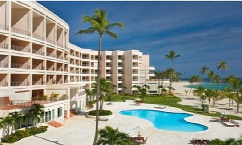
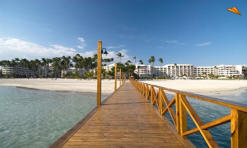
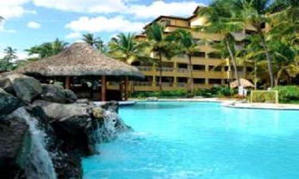

|
San Pedro de Macoris es una cuidad situada en el sureste de la Republica Dominicana,
en la costa del Mar Caribe. Fue creado como distrito marítimo a finales del siglo XIX
y tuve una época de florecimiento a raíz del encarecimiento del precio de la azúcar,
lo que atrajo migraciones de árabes, españoles, franceses y sobre todo, trabajadores
ingleses de Las Islas Vírgenes, llamados comúnmente cocolos.
La zona geográfica donde se encuentra San Pedro de Macorís es prácticamente llana,
formada por extensas sabanas. En la actualidad, tiene una actividad económica muy
diversificada. Los renglones más importantes son la agricultura, la ganadería y la
producción de caña de azúcar, pues San Pedro de Macoris aún cuenta con la mayor
cantidad ingenios azucareros del país.
La actividad turística también es importante y se desarrolla sobre todo en la parte
occidental de la provincia, en el área de Guayacanes y Juan Dolio. Hay algunos
hoteles en San Pedro de Macorís, pero la oferta más importante consiste en los hoteles
y resort todo incluido en Juan Dolio.
Pulsa aquí para la Ubicación
|
|